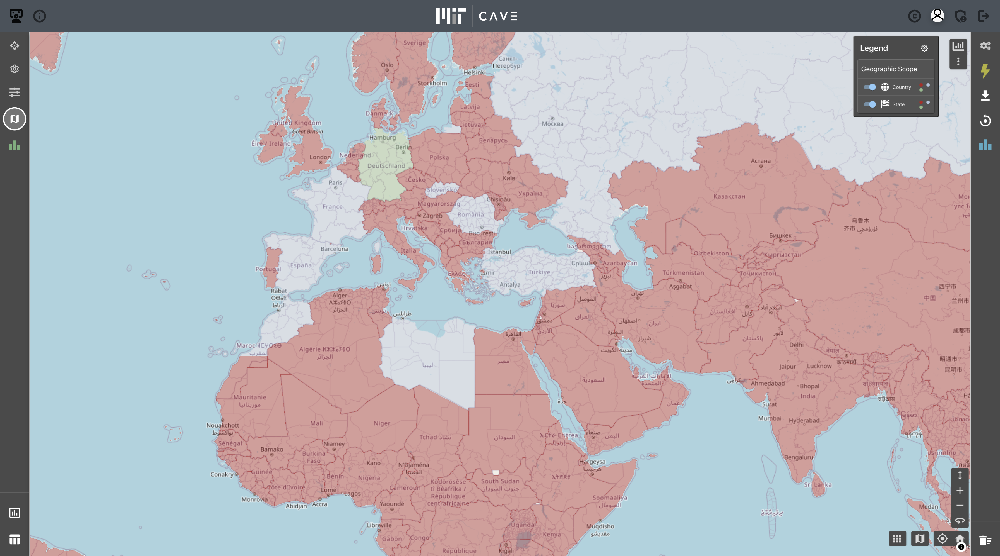

MIT CAVE Lab “Visited Places” App
Extension of CAVE Lab Framework for Session-Based Data
A cross-platform mobile app built on MIT’s CAVE Lab framework that lets users mark states and countries as “Visited” or “Lived In,” then instantly see aggregate scores and a live leaderboard.
Key Features
- Session-scoped data sharing across multiple users
- Interactive GeoJSON maps of U.S. states & world countries
- Real-time score calculation & global leaderboard
- Offline-first design with WebSocket sync
- Intuitive modal for name entry & score submission
Technologies Used
Project Overview
MIT’s CAVE Lab framework provides modular building blocks for immersive data visualization. The “Visited Places” app extends this by introducing session-focused data management so that visitors can record and share geospatial “Visited”/“Lived In” statuses in real time. :contentReference
Objective
Demonstrate how the CAVE Lab’s core framework can be modularly extended to support user-driven, session-aware data interactions that have real-world applicability (e.g., disaster response tracking). :contentReference
Methodology
- Environment: Python 3.9 backend using MIT CAVE_app framework; React Native frontend; local WebSocket server for sync. :contentReference[oaicite:3]{index=3}
- Session Data Model: Central function
execute_command(session_data, socket, command="init")builds nested JSON dict with sections for settings, appBar, maps, mapFeatures, globalOutputs, groupedOutputs. :contentReference - Map Sources: GeoJSON for U.S. states (https://geojsons.mitcave.com/world/world-states-provinces-md.json) and world countries (https://geojsons.mitcave.com/world/countries-sm.json). :contentReference
- Score Calculation:
- Count “Visited”/“Lived In” states via
vstepperItemState. - Map country codes to statuses (excluding USA) and count similarly.
- Compute weighted sum: visited-states × state-visit-weight + … + lived-countries × country-lived-weight.
- Return raw counts + total score for real-time display.
- Count “Visited”/“Lived In” states via
- Leaderboard Flow: User clicks region → backend recalculates score → “Submit Score” opens modal for name → “Save to leaderboard” appends to JSON file → groupedOutputs renders sorted table. :contentReference
Results & Impact
The app successfully engages users in hands-on geospatial exploration, validates the CAVE Lab’s extension capabilities, and delivers immediate feedback through dynamic scoring and a global leaderboard—transforming static maps into collaborative datasets. :contentReference
Future Work
- Scale to support thousands of concurrent sessions with cloud storage.
- Implement cross-session global state for persistent leaderboards.
- Add user authentication to tie scores to real profiles.
- Conduct structured user studies for UI/UX and accessibility improvements.